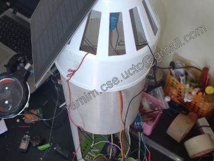
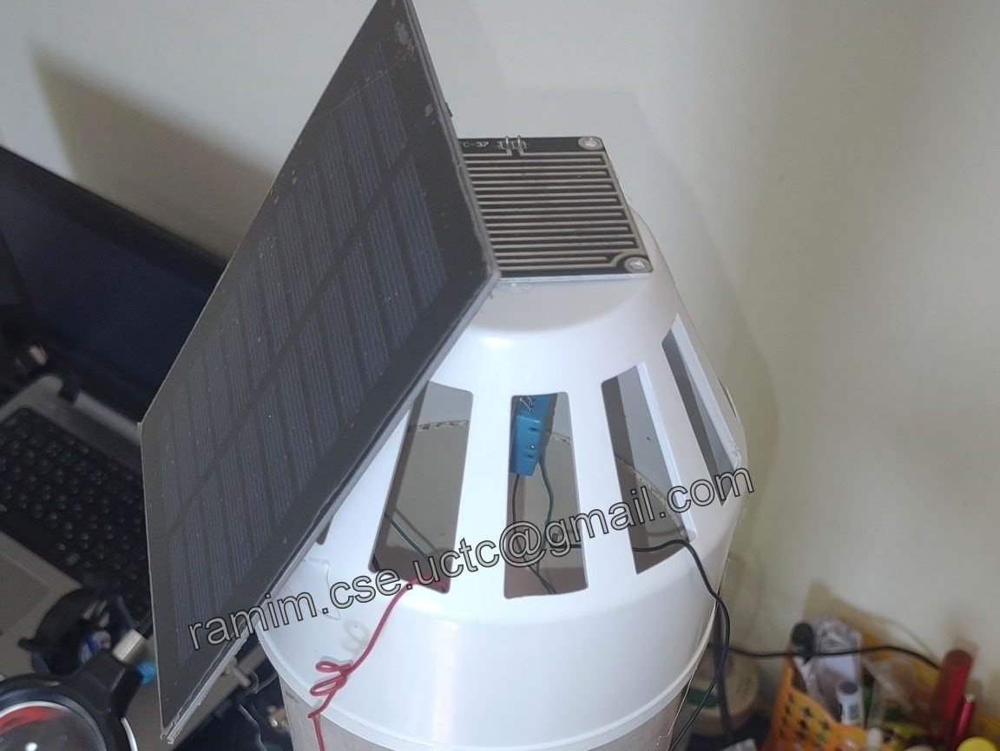
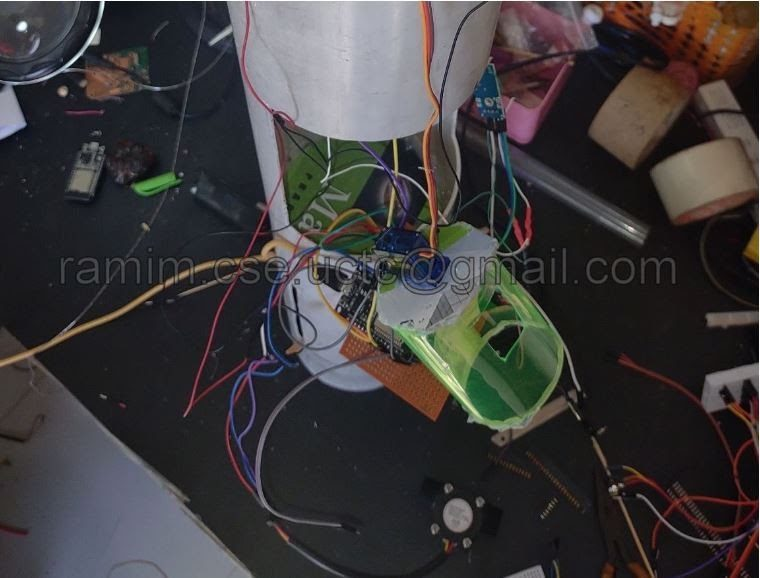
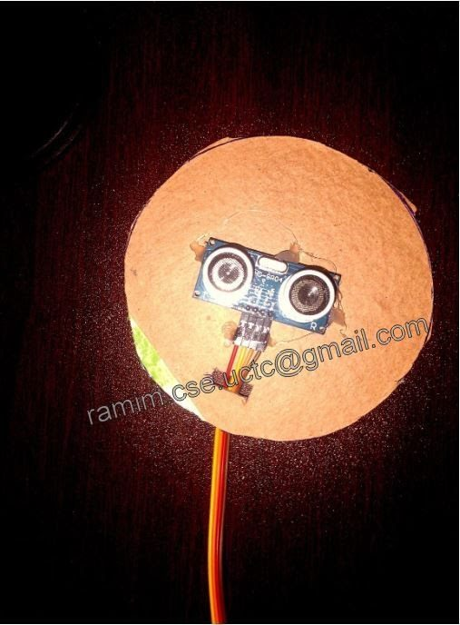
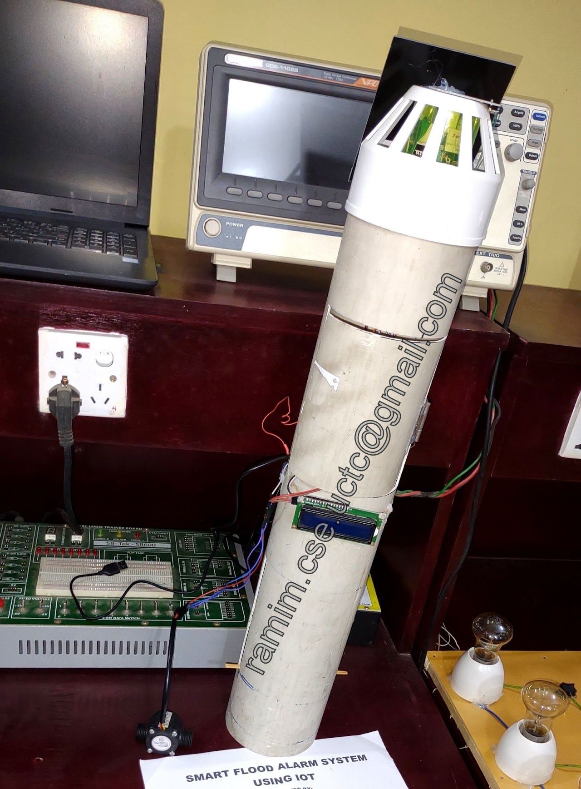

Utilities & City
Real-Time Flood Detection & Alarm System
A solar-powered ESP32 system that watches water level, water flow, rain, temperature and humidity, raises a local flood alarm, and sends notifications over Wi-Fi or GSM, with remote monitoring and control through Arduino IoT Cloud.
- Type
- Flood detection & alarm system
- Platform
- ESP32 Dev Kit v1, Arduino IoT Cloud
- Status
- v1 built for a friend's final project; being extended
- ESP32
- Arduino IoT Cloud
- Ultrasonic sensor
- Water flow sensor
- Rain sensor
- DHT11
- GSM
- Solar power
Overview
The system monitors the parameters that signal a flood: water level, water flow, rain, temperature and humidity. It sounds an advance flood alarm on site with a buzzer and notifies users over the internet through Wi-Fi or GSM. An Arduino IoT Cloud dashboard provides remote monitoring and control.



Features
- Water level: an ultrasonic sensor measures the water level.
- Water flow: a water flow sensor tracks the flow.
- Rain and climate: a rain sensor detects rain and a DHT11 reads temperature and humidity.
- Real-time alarm: a buzzer broadcasts advance flood alerts on site.
- Remote alerts: notifications go out over Wi-Fi or GSM.
- Cloud dashboard: Arduino IoT Cloud for remote monitoring and control.
Hardware
- Microcontroller: ESP32 Dev Kit v1
- Sensors: ultrasonic sensor (water level), water flow sensor, rain sensor, DHT11
- Outputs: buzzer alarm, 16x2 LCD for system information
- Connectivity: Wi-Fi or GSM
- Power: solar panel, power management system and battery backup
Versions
The first version was built for a friend's final project. I have since been updating it with more capabilities and features.

